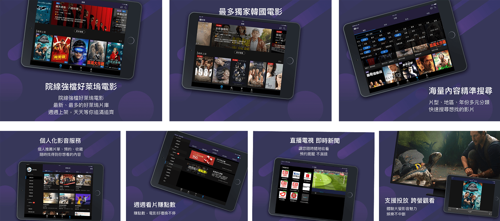

friDay影音大改版改版上線
https://video.friday.tw/IOS APP:
https://itunes.apple.com/tw/app/id1027671676IOS平板:
https://itunes.apple.com/tw/app/id1027671666Android APP:
https://play.google.com/store/apps/details?id=net.fetnet.fetvod&hl=zh_TW專案包含有：電腦螢幕、手機螢幕
APP:IOS手機/平板、Andriod手機/平板、TV APP
為此次大改版的UI/UX/QA人員。蒐集數據及回饋制定產品或提出產品最佳化的解決辦法。並替產品大改版規劃及視覺整體設計。串流、整合平台服務，提供最佳化體驗。
Design Thinking
在進行內部研調後發現改版前的平台，並沒有這麼容易找片，這對於一個內容網站來說，是很大的損失，使用者常常因為找不到『想看的片』而離開，所以與大宇展開了使用者調查及研究，開啟了此次大改版的改版理念「用內容找影片」的概念，成為了此次大改版的主要理念。而這個改版專案延宕了兩年後，在我任職後開始正式進入改版與開發及測試。
因為自己也是此平台的忠實使用者，更能夠發揮自己平常使用的習慣在此專案上。經過多次內部及外部的問卷調查，介面上的大改版是使用者都有明顯感覺到差異以及不同。調查結果有90%以上的User認為UI的改變是正向的，除了更好看也更好找到想看的片子。
途中得繪製接近百頁以上的Sitemap > wireframe與內部人員討論，並陸續修正。除了要有耐心之外，也需具有與各部門溝通協調能力，才能將此次產品多次達到理想。

UX規劃網站需求及動線
此次大改版做了幾次使用者調查及研究發現，平台上缺乏一些相關的功能，依照研究成果改版
成全新的介面及功能，正在陸續開發中。
下圖為此次改版上線的功能簡述。從之前版本從"方案"找影片，到設計改版從"內容找影片"，所以增加不少關於尋找的流程，並讓播放變得更加容易。跨螢體驗、會員個人化服務也是此次改版的重點。從數據分析來看，這些主要提升的"體驗"都有達到不錯的成果，點擊率高之外使用率也相當頻繁，有得到正面的肯定。
改版重點
1.推薦片單，排版增加豐富度並且露出多一點資訊，讓使用者無需點進詳細頁，就看得到影片的描述，依造數據分析，新改版的強檔推薦點擊率為50％左右的點擊率，人工操作更新速度很快的的強檔推薦，讓使用者能夠感受到平台片單的多元及內容的強大。
2.海量搜尋tag分類，先挑出使用者常用的Tag，再利用篩選方式選擇片單
3.搜尋優化，其餘的點擊率落在搜尋上，搜尋片單除了片名外，新增了搜尋人名、導演...等，就算沒有搜尋內容，也會推薦最新的片單給使用者。
4.個人化的觀看紀錄全面升級。個人觀看紀錄登入後就能輕鬆的在推薦頁或是header快速進入上次觀看的進度，觀看數據結果，此次功能使用者第三常用區塊
5.跨螢觀看體驗更佳。跨螢觀看除了電腦、手機、平板外，也增加chromcast、Airplay及TV，體驗更佳，原本越看越小的使用者，在觀看高品質影音產品時，還是希望能夠在大螢幕上觀看，所以跨螢觀看的體驗非常重要。
